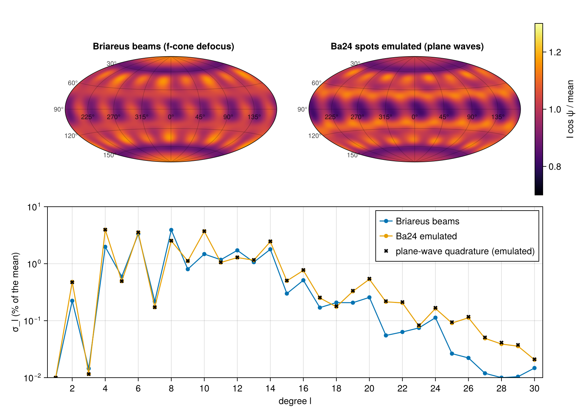

Polar direct drive: a published NIF pointing
NIF's beams enter through ports within 50° of the poles, built for indirect drive. To drive a bare capsule directly, polar direct drive (PDD) re-points the beams toward the equator and balances the cones' powers, so that the illumination of the sphere is as uniform as the port layout allows. Barlow et al. (PRL 133, 175101, 2024; Ba24 below) optimized such a pointing with a genetic algorithm and published it as their "Optimized Config" (OC): per cone, the surface point the beams aim at, a defocus and a power (their Table I). One term of their fitness is σ₁, the rms of the vacuum illumination of the 1.1 mm sphere relative to its mean over the spherical-harmonic degrees l ≤ 30: 6.03 % for the OC (their Table II).
This tutorial builds the OC on a bare sphere, computes σ₁, its mode spectrum and its m = 0 / m ≠ 0 split with Briareus, and compares them with Ba24. The comparison is a documented example, not a test: Ba24's best-focus spots are internal models of their ray tracer (Ifriit), not published, and Briareus uses the public LMF-measured fits instead; its defocus model differs from theirs; and the illumination is CBET-free, as σ₁ is. It settles how Ba24's Table I angles are read, measures how much the spot model moves σ₁, and checks Briareus on this facility case against an independent quadrature. It introduces the spherical fields of GroupPointing and the capsule-frame metrics mode_rms and mode_power. A pointing optimization from the OC is the example examples/ba24_pdd_optimization.jl.
using Briareus
using CairoMakie
using LinearAlgebra
using Printf
CairoMakie.activate!(type = "png", px_per_unit = 2)
include(joinpath(pkgdir(Briareus), "docs", "literate", "_plotting.jl")) # figure helperscutaway! (generic function with 1 method)The target and the metric
A bare sphere is a one-component target. An icosphere of subdivision n has 20n² triangles; at n = 30 (18 000 elements, edges about 40 µm on R = 1.1 mm) the facet averaging of the element representation lowers σ by about 1.7 %, a second-order error that a Richardson extrapolation from n = 20 removes (the research notes, "Hard-sphere direct-drive illumination"). ylm_weights projects any per-element field onto real spherical harmonics to l = 30 with exact facet solid angles; it is built once per mesh.
R, L = 1.1, 30
sphere(n) = Target(Component(:capsule, icosphere_mesh(R; n), Material(:CH);
surface = SphereSurface(R)))
meshes = map((20, 30)) do n
t = sphere(n)
(; n, t, W = ylm_weights(t, collect(1:nelements(t)); lmax = L))
end
target = meshes[2].t
@printf("%d and %d elements\n", nelements(meshes[1].t), nelements(target))8000 and 18000 elementsA deposition on the sphere is hard-sphere illumination: straight rays, the incident intensity times the cosine of the incidence angle, $I\cos\psi$, absorbed where each ray first lands. Its rms relative to the mean over $1 \le l \le 30$ is mode_rms of the flux's coefficients, and mode_power is the spectrum σ_l; both split into the zonal part m = 0 (the azimuthal average, set by the cones' polar angles and powers) and the rest, m ≠ 0 (the beams' discreteness in azimuth).
function modes(m, op, beams; kw...)
dep = deposit(op, beams; kw...)
c = m.W * (dep.element ./ m.t.elem_area)
(; σ = mode_rms(c, L), zero = mode_rms(c, L; m = :zero), nonzero = mode_rms(c, L; m = :nonzero),
σl = mode_power(ylm_matrix(c, L)), absorbed = sum(dep.element) / dep.delivered,
field = dep.element ./ m.t.elem_area)
end
richardson(a, b) = ((30 / 20)^2 * b - a) / ((30 / 20)^2 - 1)richardson (generic function with 1 method)The Optimized Config
Ba24's Table I gives, per cone pair, a polar angle and an azimuthal offset of the aim point on the 1.1 mm sphere, a defocus and a power in percent of 4 TW per quad. The caption reads the polar angle from the pole and the offset from the port's azimuth. That is GroupPointing's :theta_s and :dphi_s with radius = R: the aim is the point of the sphere at those angles, mirrored to $180° - \theta_s$ in the lower hemisphere with the offset in the same sense (Ba24 chose offsets that turn the same way in both hemispheres).
oc = Dict(:inner23 => (6.36, 52.02, 8.22, 66.26), :inner30 => (14.95, 160.75, 9.07, 66.26),
:outer44 => (52.48, -12.14, 4.67, 95.05), :outer50 => (85.62, 6.90, 6.83, 82.88))
p = GroupPointing(nif_quads(); fields = (:theta_s, :dphi_s, :defocus, :power), radius = R)
x_oc = reduce(vcat, [[oc[k][1], oc[k][2], oc[k][3], 4 * oc[k][4] / 100] for k in p.keys])
quads = apply(p, x_oc)
for k in p.keys
q = quads[findfirst(b -> b.group == k && b.port[3] > 0, quads)]
θ, φ = port_angles(q)
@printf("%-8s port (%5.1f°, %6.2f°) -> aim (%5.2f°, %6.2f°), defocus %.2f mm, %.2f TW/quad\n",
k, θ, φ, acosd(q.aim[3] / R), mod(atand(q.aim[2], q.aim[1]), 360), q.defocus, q.power)
endinner23 port ( 23.5°, 78.75°) -> aim ( 6.36°, 130.77°), defocus 8.22 mm, 2.65 TW/quad
inner30 port ( 30.6°, 34.33°) -> aim (14.95°, 195.08°), defocus 9.07 mm, 2.65 TW/quad
outer44 port ( 44.5°, 16.29°) -> aim (52.48°, 4.15°), defocus 4.67 mm, 3.80 TW/quad
outer50 port ( 50.0°, 39.67°) -> aim (85.62°, 46.57°), defocus 6.83 mm, 3.32 TW/quadBa24 assume that the four beams of a quad overlap exactly at the aim point, repointed after defocusing. Briareus therefore uses NIF's 192 beams, each from its own port direction, with its quad's aim, defocus and a quarter of its power:
quad_of = Dict(q.quad => q for q in quads)
function oc_beams(; spot = b -> b.spot, defocus = q -> q.defocus, aims = Dict(q.quad => q.aim for q in quads))
map(nif_beams()) do b
q = quad_of[b.quad]
remake(b; aim = aims[b.quad], defocus = defocus(q), power = q.power / 4, spot = spot(b))
end
end
beams = oc_beams()
length(beams)192Two spot models
Briareus's own beams. The best-focus spots are the LMF-measured CPP fits of nif_spot (super-Gaussians of orders 4.5–8, elliptical), and a defocus blurs the best-focus profile over the f/20.7 cone of each beam (geometric optics, Cok et al. 2008's model in substance), with the focus the defocus beyond the aim.
Ba24's beams, emulated. Ba24 treat each beam as a plane wave and grow the super-Gaussian 1/e radii linearly with defocus, $w(d) = w_0 (1 + \kappa d)$ with κ = 0.30, 0.40, 0.80, 0.95 per 50 mm for the 23.5°, 30°, 44.5° and 50° cones (fitted to pF3D; their appendix). Here that is a zero-defocus spot with the radii scaled explicitly and collimated beams (ncone = 1), with the same LMF fits as $w_0$.
κ = Dict(:inner23 => 0.30 / 50, :inner30 => 0.40 / 50, :outer44 => 0.80 / 50, :outer50 => 0.95 / 50)
grown(b) = (g = 1 + κ[b.group] * quad_of[b.quad].defocus; with_axes(b.spot, g * b.spot.a, g * b.spot.b))
emulated = oc_beams(; spot = grown, defocus = q -> 0.0)192-element Vector{Beam{Float64}}:
Beam(B111, θ=52.38°, φ=42.28°, 0.8288 TW, aim=(0.754, 0.7965, 0.08401), defocus=0 mm)
Beam(B112, θ=47.68°, φ=42.47°, 0.8288 TW, aim=(0.754, 0.7965, 0.08401), defocus=0 mm)
Beam(B113, θ=52.38°, φ=37.05°, 0.8288 TW, aim=(0.754, 0.7965, 0.08401), defocus=0 mm)
Beam(B114, θ=47.68°, φ=36.86°, 0.8288 TW, aim=(0.754, 0.7965, 0.08401), defocus=0 mm)
Beam(B115, θ=127.62°, φ=53.24°, 0.8288 TW, aim=(0.589, 0.9252, -0.08401), defocus=0 mm)
Beam(B116, θ=132.32°, φ=53.43°, 0.8288 TW, aim=(0.589, 0.9252, -0.08401), defocus=0 mm)
Beam(B117, θ=127.62°, φ=48.01°, 0.8288 TW, aim=(0.589, 0.9252, -0.08401), defocus=0 mm)
Beam(B118, θ=132.32°, φ=47.82°, 0.8288 TW, aim=(0.589, 0.9252, -0.08401), defocus=0 mm)
Beam(B121, θ=46.89°, φ=59.62°, 0.9505 TW, aim=(0.5571, 0.6715, 0.6699), defocus=0 mm)
Beam(B122, θ=42.19°, φ=59.37°, 0.9505 TW, aim=(0.5571, 0.6715, 0.6699), defocus=0 mm)
⋮
Beam(B458, θ=133.11°, φ=160.87°, 0.9505 TW, aim=(-0.7672, 0.4154, -0.6699), defocus=0 mm)
Beam(B461, θ=47.68°, φ=132.18°, 0.8288 TW, aim=(-0.7927, 0.758, 0.08401), defocus=0 mm)
Beam(B462, θ=52.38°, φ=131.99°, 0.8288 TW, aim=(-0.7927, 0.758, 0.08401), defocus=0 mm)
Beam(B463, θ=47.68°, φ=126.57°, 0.8288 TW, aim=(-0.7927, 0.758, 0.08401), defocus=0 mm)
Beam(B464, θ=52.38°, φ=126.76°, 0.8288 TW, aim=(-0.7927, 0.758, 0.08401), defocus=0 mm)
Beam(B465, θ=132.32°, φ=143.14°, 0.8288 TW, aim=(-0.9222, 0.5937, -0.08401), defocus=0 mm)
Beam(B466, θ=127.62°, φ=142.95°, 0.8288 TW, aim=(-0.9222, 0.5937, -0.08401), defocus=0 mm)
Beam(B467, θ=132.32°, φ=137.53°, 0.8288 TW, aim=(-0.9222, 0.5937, -0.08401), defocus=0 mm)
Beam(B468, θ=127.62°, φ=137.72°, 0.8288 TW, aim=(-0.9222, 0.5937, -0.08401), defocus=0 mm)A DepositionOperator depends on the target and the ports only, so one operator per mesh and beam model serves every pointing below.
ops = [(; native = DepositionOperator(m.t, beams), plane = DepositionOperator(m.t, beams; ncone = 1))
for m in meshes]
native = [modes(m, o.native, beams) for (m, o) in zip(meshes, ops)]
plane = [modes(m, o.plane, emulated) for (m, o) in zip(meshes, ops)]
for (name, r) in (("Briareus beams", native), ("Ba24 emulated", plane))
@printf("%-15s σ₁ = %.3f %% (n = 20), %.3f %% (n = 30), %.3f %% extrapolated; m = 0 %.3f %%, m ≠ 0 %.3f %%; absorbed %.3f\n",
name, 100r[1].σ, 100r[2].σ, 100richardson(r[1].σ, r[2].σ),
100richardson(r[1].zero, r[2].zero), 100richardson(r[1].nonzero, r[2].nonzero), r[2].absorbed)
endBriareus beams σ₁ = 6.492 % (n = 20), 6.534 % (n = 30), 6.569 % extrapolated; m = 0 5.266 %, m ≠ 0 3.926 %; absorbed 0.936
Ba24 emulated σ₁ = 7.781 % (n = 20), 7.829 % (n = 30), 7.867 % extrapolated; m = 0 6.936 %, m ≠ 0 3.712 %; absorbed 0.924The two models give σ₁ ≈ 6.6 % and 7.9 % against Ba24's 6.03 %. Both are dominated by the zonal part. The absorbed fraction, 0.92–0.94, is the light that meets the sphere (the rest passes beside it): no plasma absorbs anything here.
An independent check
For collimated beams the illumination has a closed form at every point of the sphere: a point $\hat s$ is lit by each beam whose port it faces, with the beam's super-Gaussian at the point's distance from the beam axis, times $\hat s \cdot \hat U$ for the projected intensity. The coefficients to l = 30 follow from a Gauss–Legendre rule in $\mu = \cos\theta$ (256 nodes) and the trapezoid rule in φ (512 points), with the normalized associated Legendre functions by their recurrence. This code shares nothing with the operator or the mode weights. It also gives the incident intensity $I$ (no cosine), which deposit does not.
function gauss_legendre(n)
x, w = zeros(n), zeros(n)
for i in 1:n
z, dp = cos(π * (i - 0.25) / (n + 0.5)), 0.0
for _ in 1:100
p0, p1 = 1.0, z
for k in 2:n
p0, p1 = p1, ((2k - 1) * z * p1 - (k - 1) * p0) / k
end
dp = n * (z * p1 - p0) / (z^2 - 1)
δ = p1 / dp
z -= δ
abs(δ) < 1e-15 && break
end
x[i], w[i] = z, 2 / ((1 - z^2) * dp^2)
end
return x, w
end
function legendre_normalized!(P, μ) # P[l+1, m+1] = P̄_lm(μ), ∫ P̄² dμ = 1
s = sqrt(max(0.0, 1 - μ^2))
P[1, 1] = sqrt(0.5)
for m in 0:L
m > 0 && (P[m+1, m+1] = -sqrt((2m + 1) / (2m)) * s * P[m, m])
m < L && (P[m+2, m+1] = sqrt(2m + 3) * μ * P[m+1, m+1])
for l in m+2:L
P[l+1, m+1] = sqrt((4l^2 - 1) / (l^2 - m^2)) *
(μ * P[l, m+1] - P[l-1, m+1] / sqrt((4(l - 1)^2 - 1) / ((l - 1)^2 - m^2)))
end
end
return P
end
function plane_wave_modes(beams; incident = false, nμ = 256, nφ = 512)
spots = map(beams) do b
θ, φ = port_angles(b)
U = [sind(θ) * cosd(φ), sind(θ) * sind(φ), cosd(θ)]
eθ, eφ = [cosd(θ) * cosd(φ), cosd(θ) * sind(φ), -sind(θ)], [-sind(φ), cosd(φ), 0.0]
sp = b.spot
ea = cos(sp.angle) * eθ + sin(sp.angle) * eφ
n = sp.order
(; U, aim = collect(b.aim), ea, eb = cross(U, ea), sp.a, sp.b, n,
w = b.power * n / (2π * sp.a * sp.b * Briareus.gamma(2 / n)))
end
function I(s)
v = 0.0
for g in spots
c = dot(g.U, s)
c > 0 || continue
d = R * s - g.aim
v += g.w * exp(-((dot(d, g.ea) / g.a)^2 + (dot(d, g.eb) / g.b)^2)^(g.n / 2)) * (incident ? 1 : c)
end
return v
end
xg, wg = gauss_legendre(nμ)
P = zeros(L + 1, L + 1)
A = zeros(ComplexF64, L + 1, L + 1)
vals = zeros(nφ)
for (μ, wμ) in zip(xg, wg)
st = sqrt(1 - μ^2)
Threads.@threads for j in 1:nφ
vals[j] = I([st * cospi(2(j - 1) / nφ), st * sinpi(2(j - 1) / nφ), μ])
end
legendre_normalized!(P, μ)
for m in 0:L
F = sum(vals[j] * cispi(-2m * (j - 1) / nφ) for j in 1:nφ) / nφ
for l in m:L
A[l+1, m+1] += wμ * sqrt(2π) * F * P[l+1, m+1]
end
end
end
zonal = [abs(A[l+1, 1]) / abs(A[1, 1]) for l in 0:L]
rest = [sqrt(2sum(abs2, A[l+1, 2:l+1]; init = 0.0)) / abs(A[1, 1]) for l in 0:L]
rms(v) = sqrt(sum(abs2, v[2:end]))
return (; σ = rms(hypot.(zonal, rest)), zero = rms(zonal), nonzero = rms(rest), σl = hypot.(zonal, rest))
end
reference = plane_wave_modes(emulated)
incident = plane_wave_modes(emulated; incident = true)
@printf("plane-wave quadrature: σ₁ = %.4f %% (m = 0 %.4f %%, m ≠ 0 %.4f %%); Briareus extrapolated %.4f %%\n",
100reference.σ, 100reference.zero, 100reference.nonzero, 100richardson(plane[1].σ, plane[2].σ))
@printf("max |Δσ_l|: n = 20 %.1e, n = 30 %.1e, extrapolated %.1e (units of the mean)\n",
maximum(abs.(plane[1].σl .- reference.σl)), maximum(abs.(plane[2].σl .- reference.σl)),
maximum(abs.(richardson.(plane[1].σl, plane[2].σl) .- reference.σl)))
@printf("incident intensity I instead of I cos ψ: σ₁ = %.2f %%\n", 100incident.σ)plane-wave quadrature: σ₁ = 7.8674 % (m = 0 6.9365 %, m ≠ 0 3.7123 %); Briareus extrapolated 7.8669 %
max |Δσ_l|: n = 20 7.3e-04, n = 30 3.3e-04, extrapolated 4.0e-06 (units of the mean)
incident intensity I instead of I cos ψ: σ₁ = 14.25 %Briareus's spectrum converges to the quadrature at second order in the element size (the error falls by 2.2 from n = 20 to 30, against (30/20)² = 2.25), and the extrapolated σ₁ agrees to 6 parts in 10⁵ of itself. The incident intensity, 14 %, is far from Ba24's 6.03 %: σ₁ is the projected (absorbed) intensity, as the hard-sphere deposition computes it.
Which azimuth reading
Ba24's method text describes the pointing differently from the caption: relative to the point of the sphere nearest the quad's port, as an angle away from it and a direction about it (in their code, Polaris, a rotation of the port's surface point by the angle, then about the port axis by the offset, defined for the lower hemisphere and mirrored to the upper). Read that way, Table I's 85.62° for the 50° cone would aim those beams 85.6° from their own ports, near the limb they can see.
function about_port(q)
θp, φp = port_angles(q)
U = q.port
eθ, eφ = Briareus.port_basis(U)
toward_equator = U[3] > 0 ? eθ : -eθ
θo, ψ = oc[q.group][1], oc[q.group][2]
d = -cosd(ψ) * toward_equator + sind(ψ) * eφ # Polaris's lower-hemisphere frame, mirrored
return R * (cosd(θo) * U + sind(θo) * d)
end
aims_b = Dict(q.quad => about_port(q) for q in quads)
reading_b = (; native = modes(meshes[2], ops[2].native, oc_beams(; aims = aims_b)),
plane = modes(meshes[2], ops[2].plane, oc_beams(; aims = aims_b, spot = grown, defocus = q -> 0.0)))
@printf("about the port: σ₁ = %.0f %% (Briareus beams), %.0f %% (Ba24 emulated), n = 30\n",
100reading_b.native.σ, 100reading_b.plane.σ)about the port: σ₁ = 150 % (Briareus beams), 145 % (Ba24 emulated), n = 30The outer beams then graze the sphere and σ₁ exceeds 100 %. Two variants of that reading (Polaris's other hemisphere convention, or the direction counted from the toward-equator side) give 145 % and 30 % with the emulated spots (research notes). The caption's reading, polar angle from the pole and azimuth offset from the port, is the only one within reach of 6.03 %, and it puts the four cones where a PDD design puts them (near the pole, at mid-latitude and near the equator): it is the published design, and the reading :theta_s/:dphi_s implement. Reversing the offset's sense in the lower hemisphere moves σ₁ by 0.3 points, all of it in the m ≠ 0 part, so that detail is not settled by σ₁; Ba24's statement that the offsets turn the same way in both hemispheres is.
How much the spots matter
Ba24's best-focus spots are not published, so the comparison rests on how far σ₁ moves when the spots change within what one could reasonably substitute. Scaling all the emulated spots by ±10 %, or replacing their orders by a common one with the same 1/e radii:
for s in (0.9, 1.1)
r = modes(meshes[2], ops[2].plane, oc_beams(; spot = b -> (g = grown(b); with_axes(g, s * g.a, s * g.b)),
defocus = q -> 0.0))
@printf("spots × %.1f: σ₁ = %.2f %% (m = 0 %.2f %%, m ≠ 0 %.2f %%)\n", s, 100r.σ, 100r.zero, 100r.nonzero)
end
for n in (3.0, 4.0)
r = modes(meshes[2], ops[2].plane, oc_beams(; spot = b -> (g = grown(b);
SuperGaussianSpot(g.a, g.b; order = n, angle = g.angle)),
defocus = q -> 0.0))
@printf("order %.0f: σ₁ = %.2f %% (m = 0 %.2f %%, m ≠ 0 %.2f %%)\n", n, 100r.σ, 100r.zero, 100r.nonzero)
endspots × 0.9: σ₁ = 8.72 % (m = 0 6.69 %, m ≠ 0 5.59 %)
spots × 1.1: σ₁ = 9.23 % (m = 0 8.89 %, m ≠ 0 2.50 %)
order 3: σ₁ = 5.99 % (m = 0 5.83 %, m ≠ 0 1.39 %)
order 4: σ₁ = 7.17 % (m = 0 6.61 %, m ≠ 0 2.79 %)Ten percent on the spot size raises σ₁ by 0.9 to 1.4 points either way: the LMF spot size sits near the bottom of the OC's σ₁, which suggests Ba24's spots are of about that size. The profile's steepness matters more: order-3 spots with the same 1/e radii bring the emulation to Ba24's value. The OC was optimized for Ba24's own spots, so their σ₁ sits at an optimum that other spots need not share; Briareus's 6.6–7.9 % is within the spread the unpublished spots allow.
The convention of absorption matters more still. With the thin-corona absorption weight $\eta_a(\psi) = 1 - (1 - \eta_\perp)^{\cos^3\psi}$ of deposit's absorption keyword (Murakami and Nishi 2017; η⊥ = 0.9 is their value, not Ba24's), the oblique light near the equator counts for less:
ηa = modes(meshes[2], ops[2].native, beams; absorption = 0.9)
@printf("absorbed with η⊥ = 0.9: σ₁ = %.2f %%, absorbed fraction %.3f\n", 100ηa.σ, ηa.absorbed)absorbed with η⊥ = 0.9: σ₁ = 14.36 %, absorbed fraction 0.620σ₁ more than doubles: the OC drives the equator with grazing light, which the weight discounts. Ba24's σ₁ is the vacuum intensity without such a weight (and the thin-corona weight itself underestimates grazing absorption in real coronas; research notes, "Corona model prototype").
The illumination
The two models side by side on equal-area maps (the field relative to its mean, the north pole at the top), and their spectra against the plane-wave quadrature. The discrete spots of the outer cones near the equator are the m ≠ 0 part; the f-cone blur of Briareus's defocus smooths them more than Ba24's linear growth does.
fig = Figure(size = (900, 640))
for (j, (title, r)) in enumerate((("Briareus beams (f-cone defocus)", native[2]),
("Ba24 spots emulated (plane waves)", plane[2])))
ax = sphere_axis(fig[1, j]; title)
hm = sphere_heatmap!(ax, sphere_map(target, r.field ./ (sum(r.field .* target.elem_area) / sum(target.elem_area)),
:capsule); colormap = :inferno, colorrange = (0.7, 1.3))
j == 2 && Colorbar(fig[1, 3], hm; label = "I cos ψ / mean")
end
ax = Axis(fig[2, 1:3]; xlabel = "degree l", ylabel = "σ_l (% of the mean)", yscale = log10,
xticks = 0:2:30, limits = (0.5, 30.5, 1e-2, 10))
scatterlines!(ax, 1:L, 100 .* max.(native[2].σl[2:end], 1e-4); label = "Briareus beams")
scatterlines!(ax, 1:L, 100 .* max.(plane[2].σl[2:end], 1e-4); label = "Ba24 emulated")
scatter!(ax, 1:L, 100 .* max.(reference.σl[2:end], 1e-4); marker = :xcross, color = :black,
label = "plane-wave quadrature (emulated)")
axislegend(ax; position = :rt)
fig
The zonal part of the odd degrees vanishes: cone by cone, the polar angles and powers are mirrored about the equator. The odd degrees that remain (l = 9, 11, 13 near 1 %) are m ≠ 0: NIF's lower ports are the upper ones turned about a horizontal axis, not mirrored, so the two hemispheres' spots do not sit at the same azimuths.
Optimizing from the OC
The OC is not an optimum of σ₁ alone: Ba24's fitness also rewards a uniform ablation pressure in a 4-ns plasma with CBET and a high mean pressure, which Briareus cannot yet compute. The example examples/ba24_pdd_optimization.jl minimizes σ₁ alone over Ba24's 16 parameters and bounds (θs, Δφs, defocus 0–10 mm, power 2–4 TW/quad per cone), with Briareus's beams on the n = 20 sphere. L-BFGS-B with ForwardDiff gradients through deposit (one gradient costs about four evaluations) goes from 6.49 % to 2.61 % in 50 evaluations and 2.11 % in 229 (four minutes on 8 threads); Nelder–Mead needs about 700 evaluations to reach 2.1 % and a particle swarm 2.5 % in 1 200; four random starts reach 2.4–5.3 % in 75 evaluations each, so σ₁ has several optima. Ba24 report that their genetic algorithm with coordinate descent needs more than 10 000 evaluations to settle on σ₁ alone. The research notes have the table ("Ba24 σ₁ comparison and optimization").
Briareus against Ba24
| quantity | Ba24 | Briareus beams | Ba24 spots emulated | likely cause of the difference |
|---|---|---|---|---|
| σ₁ (l ≤ 30) | 6.03 % | 6.57 % | 7.87 % | best-focus spots (Ifriit internal vs LMF fits): ±10 % in size adds ~1 point, order 3 gives 6.0 % |
| σ₁, m = 0 | n/a | 5.27 % | 6.94 % | the cone balance at the poles and equator, through the spot widths |
| σ₁, m ≠ 0 | n/a | 3.93 % | 3.71 % | discrete quads near the equator |
| dominant modes | Fig. 2a (figure only) | l = 8, 6, 4 | l = 4, 10, 6 | defocus convention: f-cone blur vs linear radius growth |
| absorbed fraction | 77 % (3-D, with plasma and CBET) | 93.6 % (vacuum, light meeting the sphere) | 92.4 % | no plasma, no CBET here |
Briareus values extrapolated from n = 20 and 30. With σ₁ within 0.5 points (own beams) and 1.8 points (emulated) and the measured spot sensitivity larger than both, the comparison supports the caption's reading of Table I and Briareus's hard-sphere deposition; it cannot calibrate either model, and is not used to.
What this checks
- Ba24's Table I read as the caption states (polar angle from the pole, azimuth offset from the port's) gives σ₁ = 6.57 % with Briareus's beams and 7.87 % with Ba24's defocus emulated, against their 6.03 %; read about the port, as their method text and code describe the search parameters, 30–150 %. The caption's reading is the published design;
GroupPointing's:theta_s/:dphi_simplement it. - On the emulated (collimated) beams, Briareus's σ_l (l ≤ 30) matches an independent plane-wave quadrature to 3.3e-4 of the mean at n = 30 and to 4e-6 extrapolated, at second order in the element size, as on the analytic cases of the test suite (Skupsky–Lee, Temporal et al. 2014, Murakami and Nishi 2017); σ₁ to 6e-5 relative.
- σ₁ is the projected intensity $I\cos\psi$: the incident intensity gives 14.2 %, and the thin-corona absorption weight at η⊥ = 0.9 gives 14.4 %.
- The difference from Ba24 is within the spot-model uncertainty: ±10 % in spot size adds about one point to σ₁, and order-3 spots give 6.0 %. Ba24's numbers are a comparison, never a fit target (decision 1 of the polar-direct-drive review).
This page was generated using Literate.jl.